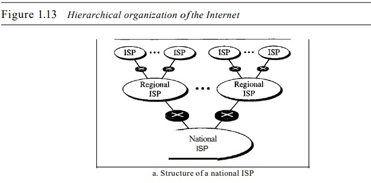
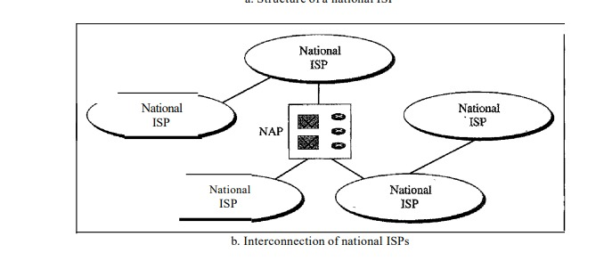

<!DOCTYPE html>
<html lang="en">

<head>
  <meta charset="UTF-8">
  <meta http-equiv="X-UA-Compatible" content="IE=edge">
  <meta name="viewport" content="width=device-width, initial-scale=1.0">
  <title>Data Communications</title>
</head>
<link rel="stylesheet" href="./css/style1.css">

<body>

  <div class="stick">
    <div class="header"><br><b>Data Communication and Networking</b><br><br></div>
    <div class="nav">
      <a class="nav" href="./title.html">Title</a>
      <a class="nav" href="./index.html">Index</a>
      <a class="nav" href="./Glossary.html">Glossary</a>
    </div>
  </div>
  <div class="Content">
<big>
      
      <a name="Internet"><h1><u>2.&nbsp;The Internet</u></h1></a>
      <p>The Internet has revolutionized many aspects of our daily lives. It has affected the way
        we do business as well as the way we spend our leisure time. Count the ways you've
        used the Internet recently. Perhaps you've sent electronic mail (e-mail) to a business
        associate, paid a utility bill, read a newspaper from a distant city, or looked up a local
        movie schedule-all by using the Internet. Or maybe you researched a medical topic,
        booked a hotel reservation, chatted with a fellow Trekkie, or comparison-shopped for a
        car. The Internet is a communication system that has brought a wealth of information to
        our fingertips and organized it for our use.
        The Internet is a structured, organized system. We begin with a brief history of the
        Internet. We follow with a description of the Internet today.
      </p>
      <a name="History">
        <h2>Brief History</h2>
      </a>
      <p>A network is a group of connected communicating devices such as computers and
        printers. An internet (note the lowercase letter i) is two or more networks that can communicate with each
        other. The most notable internet is called the Internet (uppercase
        letter I), a collaboration of more than hundreds of thousands of interconnected networks. Private individuals as
        well as various organizations such as government agencies, schools, research facilities, corporations, and
        libraries in more than 100 countries
        use the Internet. Millions of people are users. Yet this extraordinary communication system only came into being
        in 1969. </p>
      <p>In the mid-1960s, mainframe computers in research organizations were standalone devices. Computers from
        different manufacturers were unable to communicate
        with one another. The Advanced Research Projects Agency (ARPA) in the Department of Defense (DoD) was interested
        in finding a way to connect computers so that
        the researchers they funded could share their findings, thereby reducing costs and eliminating duplication of
        effort.</p>
      <p>In 1967, at an Association for Computing Machinery (ACM) meeting, ARPA presented its ideas for ARPANET, a small
        network of connected computers. The idea was
        that each host computer (not necessarily from the same manufacturer) would be
        attached to a specialized computer, called an inteiface message processor (IMP). The
        IMPs, in tum, would be connected to one another. Each IMP had to be able to communicate with other IMPs as well
        as with its own attached host.</p>
      <p>By 1969, <a class="glossary_anchors" href="./Glossary.html#Garp" id="arp"><b>ARPANET</b></a> was a reality. Four nodes, at the University of California at
        Los Angeles (UCLA), the University of California at Santa Barbara (UCSB), Stanford
        Research Institute (SRI), and the University of Utah, were connected via the IMPs to
        form a network. Software called the Network Control Protocol (NCP) provided communication between the hosts.</p>
      <p>In 1972, Vint Cerf and Bob Kahn, both of whom were part of the core ARPANET
        group, collaborated on what they called the Internetting Projec1. Cerf and Kahn's landmark 1973 paper outlined
        the protocols to achieve end-to-end delivery of packets. This
        paper on Transmission Control Protocol (<a class="glossary_anchors" href="./Glossary.html#Gtcp" id="tcp"><b>TCP</b></a>) included concepts such as encapsulation, the datagram, and the
        functions of a gateway.</p>
      <p>Shortly thereafter, authorities made a decision to split TCP into two protocols:
        Transmission Control Protocol (TCP) and Internetworking Protocol (lP). IP would
        handle datagram routing while TCP would be responsible for higher-level functions
        such as segmentation, reassembly, and error detection. The internetworking protocol
        became known as TCPIIP.</p>
      <a name="Today">
        <h2>Internet Today</h2>
      </a>
      <p>The Internet has come a long way since the 1960s. The Internet today is not a simple
        hierarchical structure. It is made up of many wide- and local-area networks joined by
        connecting devices and switching stations. It is difficult to give an accurate representation of the Internet
        because it is continually changing-new networks are being
        added, existing networks are adding addresses, and networks of defunct companies are
        being removed. Today most end users who want Internet connection use the services of
        Internet service providers (<a class="glossary_anchors" href="./Glossary.html#Gisp" id="isp"><b>ISPs</b></a>). There are international service providers, national
        service providers, regional service providers, and local service providers. The Internet
        today is run by private companies, not the government. Figure 1.13 shows a conceptual
        (not geographic) view of the Internet.</p>
      
      
      <h3>Internation Internet Service Provider</h3>
      <p>At the top of the hierarchy are the international service providers that connect nations
        together.</p>
      <h3>National Internet Service Provider</h3>
      <p>The national Internet service providers are backbone networks created and maintained by specialized companies.
        There are many national ISPs operating in North
        America; some of the most well known are SprintLink, PSINet, UUNet Technology,
        AGIS, and internet Mel. To provide connectivity between the end users, these backbone networks are connected by
        complex switching stations (normally run by a third
        party) called network access points (NAPs). Some national ISP networks are also
        connected to one another by private switching stations called peering points. These
        normally operate at a high data rate (up to 600 Mbps)</p>
      <h3>Regional Internet Service Provider</h3>
      <p>Regional internet service providers or regional ISPs are smaller ISPs that are connected
        to one or more national ISPs. They are at the third level of the hierarchy with a smaller
        data rate.</p>
      <h3>Local Internet Service Provider</h3>
      <p>Local Internet service providers provide direct service to the end users. The local
        ISPs can be connected to regional ISPs or directly to national ISPs. Most end users are
        connected to the local ISPs. Note that in this sense, a local ISP can be a company that
        just provides Internet services, a corporation with a network that supplies services to its
        own employees, or a nonprofit organization, such as a college or a university, that runs
        its own network. Each of these local ISPs can be connected to a regional or national
        service provider</p>
    </big>
  </div>
  <div class="footer">
    <div class="nav">
      <a class="nav" href="./chapter2.html">Previous Page</a>
      <a class="nav" href="./chapter4.html">Next Page</a>
    </div><big>
    &copy; Created by Aa30 Raj</big>
  </div>
</body>

</html>